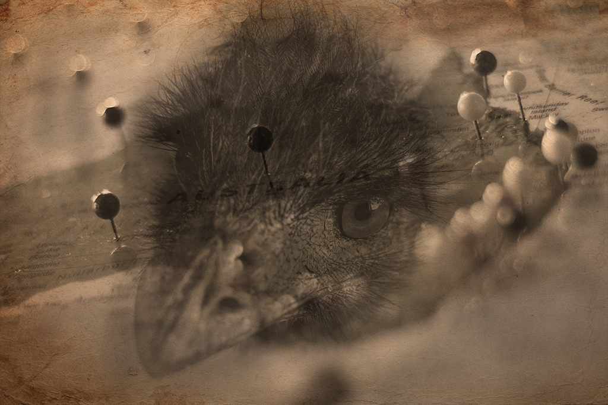

The Great Emu War
Lest we forget Australia's most devastating loss
Background
The Great Emu War was a military operation undertaken in Australia over the latter part of 1932 to address public concern over the number of emus said to be running amok in the Campion district of Western Australia. While many the birds were killed, the emu population persisted and continued to cause crop destruction.
Quick Facts
| Date | 02 November - 10 December 1932 |
|---|---|
| Location | Campion, Western Australia |
| Participants |
|
| Enemy Combatants | Emus |
| Outcome | Failure (Decisive Emu Victory) |
Prelude to the War
Following World War I, large numbers of ex-soldiers from Australia, along with a number of British veterans, were given land by the Australian government to take up farming within Western Australia, often in marginal areas. With the onset of the Great Depression in 1929, these farmers were encouraged to increase their wheat crops, with the government promising—and failing to deliver—assistance in the form of subsidies. Despite the recommendations and the promised subsidies, wheat prices continued to fall, and by October 1932 matters were becoming intense, with the farmers preparing to harvest the season's crop while simultaneously threatening to refuse to deliver the wheat.
The Enemy Emerges
The difficulties facing farmers were increased by the arrival of as many as 20,000 emus. Emus regularly migrate after their breeding season, heading to the coast from the inland regions. With the cleared land and additional water supplies being made available for livestock by the West Australian farmers, the emus found that the cultivated lands were good habitat, and they began to foray into farm territory—in particular the marginal farming land around Chandler and Walgoolan. The emus consumed and spoiled the crops, as well as leaving large gaps in fences where rabbits could enter and cause further problems.
Australia Responds
Farmers relayed their concerns about the birds ravaging their crops, and a deputation of ex-soldiers were sent to meet with the Minister of Defence, Sir George Pearce. Having served in World War I, the soldier-settlers were aware of the effectiveness of machine guns, and they requested their deployment. The minister readily agreed, although with conditions attached:
- the guns were to be used by military personnel
- troop transport was to be financed by the Western Australian government
- the farmers would provide food, accommodation, and payment for the ammunition
Pearce also supported the deployment on the delusional grounds that the birds would make good target practice. It was not until years later that Pearce admitted he could not have possibly predicted the chaos that awaited his forces.
... Eventually
Military involvement was due to begin in October 1932. The operation was delayed, however, by a period of rainfall that caused the emus to scatter over a wider area.
Chaos on the Battlefield
The 'war' was conducted under the command of Major G.P.W. Meredith of the Seventh Heavy Battery of the Royal Australian Artillery, with Meredith commanding soldiers Sergeant S. McMurray and Gunner J. O'Hallora, armed with two Lewis guns and 10,000 rounds of ammunition.
2 November
On 2 November, the men travelled to Campion, where some 50 emus were sighted. However, the birds split into small groups and ran so that they were difficult to target. While the first fusillade from the machine guns was ineffective due to the range, a second round of gunfire was able to kill "a number" of birds.
4 November
The next significant event was on 4 November. Meredith had established an ambush near a local dam, and more than 1,000 emus were spotted heading towards their position. This time, the gunners waited until the birds were in proximity before opening fire. The gun jammed after only twelve birds were killed and the remainder scattered before any more could be shot. No more birds were sighted that day.
6 November
By the fourth day of the campaign, army observers noted that "each pack seems to have its own leader now – a big black-plumed bird which stands fully six feet high and keeps watch while his mates carry out their work of destruction and warns them of our approach." (See figure below.)
At one stage Meredith even went so far as to mount one of the guns on a truck: a move that proved to be ineffective, as the truck was unable to gain on the birds, and the ride was so rough that the gunner was unable to fire any shots.
8 November
By 8 November, six days after the first engagement, 2,500 rounds of ammunition had been fired. The number of birds killed is uncertain: one account estimates that it was 50 birds.
That day, Pearce withdrew the military personnel and the guns.
Aftermath
Summarising the culls, ornithologist Dominic Serventy commented:
The machine-gunners' dreams of point-blank fire into serried masses of Emus were soon dissipated. The Emu command had evidently ordered guerrilla tactics, and its unwieldy army soon split up into innumerable small units that made use of the military equipment uneconomic. A crestfallen field force therefore withdrew from the combat area after about a month.
After the withdrawal, Major Meredith commented on the striking manoeuvrability of the emus, even while badly wounded.
If we had a military division with the bullet-carrying capacity of these birds it would face any army in the world... They can face machine guns with the invulnerability of tanks.
Further Reading
Burton, Adrian (1 August 2013). "Tell me, mate, what were emus like?". Frontiers in Ecology and the Environment. 11 (6): 336.
Johnson, Murray (2006). "'Feathered foes': soldier settlers and Western Australia's 'Emu War' of 1932". Journal of Australian Studies. 30 (88): 147–157.
"Machine Guns Sent Against Emu Pests". The Argus. 3 November 1932. p. 2.
"Elusive Emus". The Argus. 5 November 1932. p. 4.
"War on Emus". The Argus. 10 November 1932. p. 8.